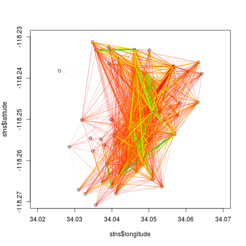

1. Introduction
bikedata is an R package for downloading and aggregating data from public bicycle hire, or bike share, systems. Although there are very many public bicycle hire systems in the world (see this wikipedia list), relatively few openly publish data on system usage. The bikedata package aims to enable ready importing of data from all systems which provide it, and will be expanded on an ongoing basis as more systems publish open data. Cities and names of associated public bicycle hire systems currently included in the bikedata package, along with numbers of bikes and of docking stations, are:
| London, U.K. |
Santander Cycles |
13,600 |
839 |
| San Francisco Bay Area, U.S.A. |
Ford GoBike |
7,000 |
540 |
| New York City NY, U.S.A. |
citibike |
7,000 |
458 |
| Chicago IL, U.S.A. |
Divvy |
5,837 |
576 |
| Montreal, Canada |
Bixi |
5,220 |
452 |
| Washingon DC, U.S.A. |
Capital BikeShare |
4,457 |
406 |
| Guadalajara, Mexico |
mibici |
2,116 |
242 |
| Minneapolis/St Paul MN, U.S.A. |
Nice Ride |
1,833 |
171 |
| Boston MA, U.S.A. |
Hubway |
1,461 |
158 |
| Philadelphia PA, U.S.A. |
Indego |
1,000 |
105 |
| Los Angeles CA, U.S.A. |
Metro |
1,000 |
65 |
All of these systems record and disseminate individual trip data, minimally including the times and places at which every trip starts and ends. Some provide additional anonymised individual data, typically including whether or not a user is registered with the system and if so, additional data including age, gender, and residential postal code. The list of cities may be obtained with the bike_cities() functions, and details of which include demographic data with bike_demographic_data().
Cities with extensively developed systems and cultures of public hire bicycles, yet which do not provide (publicly available) data include:
| Hangzhou, China |
78,000 |
2,965 |
| Paris, France |
14,500 |
1,229 |
| Barcelona, Spain |
6,000 |
424 |
The current version of the bikedata R package can be installed with the following command:
Or the development version with
Once installed, it can be loaded in the usual way:
## Data for London, U.K. powered by TfL Open Data:
## Contains OS data Ⓒ Crown copyright and database rights 2016
## Data for New York City provided and owned by:
## NYC Bike Share, LLC and Jersey City Bike Share, LLC ("Bikeshare")
## see https://www.citibikenyc.com/data-sharing-policy
## Data for Washington DC (Captialbikeshare), Chiago (Divvybikes) and Boston (Hubway)
## provided and owned by Motivate International Inc.
## see https://www.capitalbikeshare.com/data-license-agreement
## and https://www.divvybikes.com/data-license-agreement
## and https://www.thehubway.com/data-license-agreement
## Nice Ride Minnesota license https://www.niceridemn.org/data_license
2. Main Functions
The bikedata function dl_bikedata() downloads individual trip data from any or all or the above listed systems, and the function store_bikedata() stores them in an SQLite3 database. For example, the following line will download all data from the Metro system of Los Angeles CA, U.S.A., and store them in a database named ‘bikedb’,
## [1] 98138
The store_bikedata() function returns the number of trips added to the database. Both the downloaded data and the SQLite3 database are stored by default in the temporary directory of the current R session. Any data downloaded into tempdir() will of course be deleted on termination of the active R session; use of other directories (as described below) will create enduring data which must be managed by the user.
Successive calls to store_bikedata() will append additional data to the same database. For example, the following line will append all data from Chicago’s Divvy bike system from the year 2017 to the database created with the first call above.
## [1] 3595383
The function again returns the number of trips added to the database, which is now less than the total number of trips stored of:
## [1] 3693521
Prior to accessing any data from the SQLite3 database, it is recommended to create database indexes using the function index_bikedata_db():
This will speed up subsequent extraction of aggregated data.
Having stored individual trip data in a database, the primary function of the bikedata package is bike_tripmat(), which extracts aggregate numbers of trips between all pairs of stations. The minimal arguments to this function are the name of the database, and the name of a city for databases holding data from multiple cities.
## [1] "matrix"
## [1] 64 64
## [1] 98138
In 2016, the Los Angeles Metro system had 64 docking stations, and there were a total of 98,138 individual trips during the year. Trip matrices can also be extracted in long form using
## # A tibble: 4,096 x 3
## start_station_id end_station_id numtrips
## <chr> <chr> <dbl>
## 1 la3005 la3005 252
## 2 la3005 la3006 93
## 3 la3005 la3007 23
## 4 la3005 la3008 153
## 5 la3005 la3010 5
## 6 la3005 la3011 63
## 7 la3005 la3014 40
## 8 la3005 la3016 10
## 9 la3005 la3018 31
## 10 la3005 la3019 36
## # ... with 4,086 more rows
Details of the docking stations associated with these trip matrices can be obtained with
## # A tibble: 660 x 6
## id city stn_id name longitude latitude
## <int> <chr> <chr> <chr> <dbl> <dbl>
## 1 1 la la3005 "" 34.0 -118.
## 2 2 la la3006 "" 34.0 -118.
## 3 3 la la3007 "" 34.1 -118.
## 4 4 la la3008 "" 34.0 -118.
## 5 5 la la3009 "" 34.0 -118.
## 6 6 la la3010 "" 34.0 -118.
## 7 7 la la3011 "" 34.0 -118.
## 8 8 la la3013 "" 34.1 -118.
## 9 9 la la3014 "" 34.1 -118.
## 10 10 la la3016 "" 34.0 -118.
## # ... with 650 more rows
Stations can also be extracted for particular cities:
For consistency and to avoid potential confusion of function names, most functions in the bikedata package begin with the prefix bike_ (except for store_bikedata() and dl_bikedata()).
Databases generated by the bikedata package will generally be very large (commonly at least several GB), and many functions may take considerable time to execute. It is nevertheless possible to explore package functionality quickly through using the additional helper function, bike_write_test_data(). This function uses the bike_dat data set provided with the package, which contains details of 200 representative trips for each of the cities listed above. The function writes these data to disk as .zip files which can then be read by the store_bikedata() function.
The .zip files generated by bike_write_test_data() are created by default in the tempdir() of the current R session, and so will be deleted on session termination. Specifying any alternative bike_dir will create enduring copies of those files in that location which ought to be deleted when finished.
The remainder of this vignette provides further detail on these three distinct functional aspects of downloading, storage, and extraction of data.
3. Downloading Data
Data may be downloaded with the dl_bikedata() function. In it’s simplest form, this function requires specification only of a city for which data are to be downloaded, although the directory is usually specified as well:
3.1 Downloading data for specific date ranges
Both store_bikedata() and dl_bikedata() accept an additional argument (dates) specifying ranges of dates for which data should be downloaded and stored. The format of this argument is quite flexible so that,
will download data from Washington DC’s Capital Bikeshare system for all 12 months of the year 2016, while,
will download New York City data from April to August (inclusively) for that year. (Note that the default data_dir is the tempdir() of the current R session, with downloaded files being deleted upon session termination.) Dates can also be entered as character strings, with the following calls producing results equivalent to the preceding call,
The only strict requirement for the format of dates is that years must be specified before months, and that some kind of separator must be used between the two except when formatted as single six-digit numbers or character strings (YYYYMM). The arguments city = 'new' and city = 'CI' in the final call are sufficient to uniquely identify New York City’s citibike system.
If files have been previously downloaded to a nominated directory, then calling the dl_bikedata() function will only download those data files that do not already exist. This function may thus be used to periodically refresh the contents of a nominated directory as new data files become available.
Some systems disseminate data on quarterly (Washington DC and Los Angeles) or bi-annual (Chicago) bases. The dates argument in these cases is translated to the appropriate quarterly or bi-annual files. These are then downloaded as single files, and thus the following call
will actually download data for the entire first and second quarters of 2016. Even though the database constructed with store_bikedata() will then contain data beyond the specified date ranges, it is nevertheless possible to obtain a trip matrix corresponding to specific dates and/or times, as described below.
The dates argument can also be passed to store_bikedata. This is useful in cases where data are to be loaded only from a restricted set of files in the given data directory.
3.2 Refreshing data sources
The dl_bikedata() function will only download data that do not already exist in the nominated directory, and so can be use to periodically refresh data. If, for example, the following function were previously run at the end of 2017:
then running again in, say, April 2018, would download three additional files corresponding to the first three months of 2018. These data can then be added to a previously-constructed database with the usual call
If previous data have been stored in a nominated database, yet deleted from local storage, then any new data can be added by first getting the names of previously stored files with
And then calling dl_bikedata, with dates specified to add only those files not previously stored.
4. Storing Data
As mentioned above, individual trip data are stored in a single SQLite3 database, created by default in the temporary directory of the current R session. Specifying a path for the bikedb argument in the store_bikedata() function will create a database that will remain in that location until explicitly deleted.
The nominated database is created if it does not already exist, otherwise additional data are appended to the existing database. As described above, the same dates argument can be passed to both dl_bikedata() and store_bikedata() to download data within specified ranges of dates.
Both dl_bikedata() and store_bikedata() are primarily intended to be used to download data for specified cities. It is possible to use the latter to store all data for all cities simply by calling store_bikedata (bikedb = bikedb), however doing so will request confirmation that data from all cities really ought to be downloaded and/or stored. Intended general usage of the store_bikedata() function is illustrated in the following line:
Note that passing with city parameter to store_bikedata() is not strictly necessary, but will ensure that only data for the nominated city are loaded from directories which may contain additional data from other cities.
5. Accessing Aggregate Data
5.1 Origin-Destination Matrices
As briefly described in the introduction, the primary function for extracting aggregate data from the SQLite3 database established with store_bikedata() is bike_tripmat(). With the single mandatory argument naming the database, this function returns a matrix of numbers of trips between all pairs of stations. Trip matrices can be returned either in square form (the default), with both rows and columns named after the bicycle docking stations and matrix entries tallying numbers of rides between each pair of stations, or in long form by requesting bike_tripmat (..., long = TRUE). The latter case will return a tibble with the three columns of station_station_id, end_station_id, and number_trips, as demonstrated above.
The data for the individual stations associated with the trip matrix can be extracted with bike_stations(), which returns a tibble containing the 6 columns of city, station code, station name, longitude, and latitude. Station codes are specified by the operators of each system, and pre-pended with a 2-character city identifier (so, for example, the first of the stations shown above is la3005). The bike_stations() function will generally return all operational stations within a given system, which bike_tripmat() will return only those stations in operation during the requested time period. The previous call stored all data from Chicago’s Divvybikes system for the year 2016 only, so the trip matrix has less entries than the full stations table, which includes stations added since then.
## [1] 581 581
## [1] 596 6
5.1.1. Temporal filtering of trip matrices
Trip matrices can also be extracted for particular dates, times, and days of the week, through specifying one or more of the optional arguments:
start_dateend_datestart_timeend_timeweekday
Arguments may in all cases be specified in a range of possible formats as long as they are unambiguous, and as long as ‘larger’ units precede ‘smaller’ units (so years before months before days, and hours before minutes before seconds). Acceptable formats may be illustrated through specifying a list of arguments to be passed to bike_tripmat(). This is done here through passing two lists to bike_tripmat() via do.call(), enabling the second list (args1) to be subsequently modified.
In args1, a two-digit start_date (or end_date) is interpreted to represent a year, while a one- or two-digit _time is interpreted to represent an hour. A value of end_time = 24 is interpreted as end_time = '23:59:59', while a value of _time = 0 is interpreted as 00:00:00. The following further illustrate the variety of acceptable formats,
Both _date and _time arguments may be specified in either character or numeric forms; in the former case with arbitrary (or no) separators. Regardless of format, larger units must precede smaller units as explained above.
Weekdays may specified as characters, which must simply be unambiguous and (in admission of currently inadequate internationalisation) correspond to standard English names. Minimal character specifications are thus 'so', 'm', 'tu', 'w', 'th', 'f', 'sa'. The value of weekday = 1 denotes Sunday, so weekdays = 2:6 denote the traditional working days, Monday to Friday, while weekends may be denoted with weekdays = c ('sa', 'so') or weekdays = c (1, 7).
5.1.2. Demographic filtering of trip matrices
As described at the outset, the bicycle hire systems of several cities provide additional demographic information including whether or not cyclists are registered with the system, and if so, additional information including birth years and genders. Note that the provision of such information is voluntary, and that no providers can or do guarantee the accuracy of their data.
Those systems which provide demographic information are listed with the function bike_demographic_data(), which also lists the nominal kinds of demographic data provided by the different systems.
## city city_name bike_system demographic_data
## 1 bo Boston Hubway TRUE
## 2 ch Chicago Divvy TRUE
## 3 dc Washington DC CapitalBikeShare FALSE
## 4 gu Guadalajara mibici TRUE
## 5 la Los Angeles Metro FALSE
## 6 lo London Santander FALSE
## 7 mo Montreal Bixi FALSE
## 8 mn Minneapolis NiceRide TRUE
## 9 ny New York Citibike TRUE
## 10 ph Philadelphia Indego FALSE
## 11 sf Bay Area FordGoBike TRUE
Data can then be filtered by demographic parameters with additional optional arguments to bike_tripmat() of,
-
registered (TRUE/FALSE, 'yes'/'no', 0/1)
-
birth_year (as one or more four-digit numbers or character strings)
-
gender (‘m/f/.’, ‘male/female/other’)
Users are not required to specify genders, and any values of gender other than character strings beginning with either f or m (case-insensitive) will be interpreted to request non-specified or alternative values of gender. Note further than many systems offer a range of potential birth years starting from a default value of 1900, and there are consequently a significant number of cyclists who declare this as their birth year.
It is of course possible to combine all of these optional parameters in a single query. For example,
The value of gender = 'xx' will be interpreted to request data from all members with nominal alternative genders. As demographic data are only given for registered users, the registered parameter is redundant in this query.
5.1.3. Standardising trip matrices by durations of operation
Most bicycle hire systems have progressively expanded over time through ongoing addition of new docking stations. Total numbers of counts within a trip matrix will thus be generally less for more recently installed stations, and more for older stations. The bike_tripmat() function has an option, standardise = FALSE. Setting standardise = TRUE allows trip matrices to be standardised for durations of station operation, so that numbers of trips between any pair of stations reflect what they would be if all stations had been in operation for the same duration.
Standardisation implements a linear scaling of total numbers of trips to and from each station according to total durations of operation, with counts in the final trip matrix scaled to have the same total number of trips as the original matrix. This standardisation has two immediate consequences:
- Numbers of trips between any pair of stations will not necessarily be integer values, but are rounded for the sake of sanity to three digits, corresponding to the maximal likely precision attainable for daily differences in operating durations;
- Trip numbers will generally not equal actual observed numbers. Counts for the longest operating durations will be lower than actually recorded, while counts for more recent stations will be greater than observed values.
The standardise option nevertheless enables travel patterns between different (groups of) stations to be statistically compared in a way that is free of the potentially confounding influence of differing durations of operation.
5.2. Station Data
Data on docking stations may be accessed with the function bike_stations() as demonstrated above:
## # A tibble: 660 x 6
## id city stn_id name longitude latitude
## <int> <chr> <chr> <chr> <dbl> <dbl>
## 1 1 la la3005 "" 34.0 -118.
## 2 2 la la3006 "" 34.0 -118.
## 3 3 la la3007 "" 34.1 -118.
## 4 4 la la3008 "" 34.0 -118.
## 5 5 la la3009 "" 34.0 -118.
## 6 6 la la3010 "" 34.0 -118.
## 7 7 la la3011 "" 34.0 -118.
## 8 8 la la3013 "" 34.1 -118.
## 9 9 la la3014 "" 34.1 -118.
## 10 10 la la3016 "" 34.0 -118.
## # ... with 650 more rows
This function returns a tibble detailing the names and locations of all bicycle stations present in the database. Station data for specific cities may be extracted through specifying an additional city argument.
## # A tibble: 596 x 6
## id city stn_id name longitude latitude
## <dbl> <chr> <chr> <chr> <dbl> <dbl>
## 1 67 ch ch456 2112 W Peterson Ave -87.7 42.0
## 2 68 ch ch101 63rd St Beach -87.6 41.8
## 3 69 ch ch109 900 W Harrison St -87.7 41.9
## 4 70 ch ch21 Aberdeen St & Jackson Blvd -87.7 41.9
## 5 71 ch ch80 Aberdeen St & Monroe St -87.7 41.9
## 6 72 ch ch346 Ada St & Washington Blvd -87.7 41.9
## 7 73 ch ch341 Adler Planetarium -87.6 41.9
## 8 74 ch ch444 Albany Ave & 26th St -87.7 41.8
## 9 75 ch ch511 Albany Ave & Bloomingdale Ave -87.7 41.9
## 10 76 ch ch376 Artesian Ave & Hubbard St -87.7 41.9
## # ... with 586 more rows
5.3. Summary Statistics
bikedata provides a number of helper functions for extracting summary statistics from the SQLite3 database. The function bike_summary_stats (bikedb) generates an overview table. (This function may take some time to execute on large databases.)
## # A tibble: 3 x 6
## city num_trips num_stations first_trip last_trip latest_files
## <chr> <dbl> <dbl> <fct> <fct> <lgl>
## 1 total 3693521 662 2016-01-01 00:… 2016-12-31 23… NA
## 2 ch 3595383 596 2016-01-01 00:… 2016-12-31 23… TRUE
## 3 la 98138 66 2016-07-07 04:… 2016-12-31 23… TRUE
Additional helper functions provide individual components from this summary data, and will generally do so notably faster for large databases than the above function. The primary individual function is bike_db_totals(), which can be used to extract total numbers of either trips (the default) or stations (by specifying trips = FALSE) from the entire database or from specific cities.
## [1] 3693521
## [1] 3595383
## [1] 93138
## [1] 660
## [1] 596
## [1] 64
The other primary components of bike_summary_stats() are the dates of first and last trips for the entire database and for individual cities. These dates can be obtained directly with the function bike_datelimits():
## first last
## "2016-01-01 00:07:00" "2016-12-31 23:57:52"
## first last
## "2016-01-01 00:07:00" "2016-12-31 23:57:52"
A helper function is also provided to determine whether the files stored in the database represent the latest available files.
## la ch
## TRUE FALSE
5.4. Time Series of Daily Trips
The bike_tripmat() function provides a spatial aggregation of data. An equivalent temporal aggregation is provided by the function bike_daily_trips(), which aggregates trips for individual days.
## # A tibble: 366 x 2
## date numtrips
## <chr> <dbl>
## 1 2016-01-01 935
## 2 2016-01-02 1421
## 3 2016-01-03 1399
## 4 2016-01-04 3833
## 5 2016-01-05 4189
## 6 2016-01-06 4608
## 7 2016-01-07 5028
## 8 2016-01-08 3425
## 9 2016-01-09 1733
## 10 2016-01-10 993
## # ... with 356 more rows
Daily trip counts can also be standardised to account for differences in numbers of stations within a system as for trip matrix standardisation described above. Such standardisation is helpful because daily numbers of trips will generally increase with increasing numbers of stations. Standardisation returns a time series of daily trips reflecting what they would be if all system stations had been in operation throughout the entire time.
## # A tibble: 366 x 2
## date numtrips
## <chr> <dbl>
## 1 2016-01-01 2469.
## 2 2016-01-02 2482.
## 3 2016-01-03 2201.
## 4 2016-01-04 5510.
## 5 2016-01-05 5884.
## 6 2016-01-06 6298.
## 7 2016-01-07 6630.
## 8 2016-01-08 4476.
## 9 2016-01-09 2265.
## 10 2016-01-10 1298.
## # ... with 356 more rows
This tibble reveals two points of immediate note:
- Trip numbers are no longer integer values, but are rounded to three decimal places to reflect the highest plausible numerical accuracy; and
- Standardised trip numbers are considerably higher for the initial values, because of expansion of the Chicago Divvy system throughout the year 2016.
6. Direct database access
Although the bikedata package aims to circumvent any need to access the database directly, through providing ready extraction of trip data for most analytical or visualisation needs, direct access may be achieved either using the convenient dplyr functions, or the more powerful functionality provided by the RSQLite package.
The following code illustrates access using the dplyr package:
## [1] "datafiles" "stations" "trips"
## # A tibble: 5 x 3
## id city name
## <int> <chr> <chr>
## 1 0 la la_metro_gbfs_trips_Q1_2017.zip
## 2 1 la MetroBikeShare_2016_Q3_trips.zip
## 3 2 la Metro_trips_Q4_2016.zip
## 4 3 ch Divvy_Trips_2016_Q1Q2.zip
## 5 4 ch Divvy_Trips_2016_Q3Q4.zip
## # A tibble: 660 x 6
## id city stn_id name longitude latitude
## <int> <chr> <chr> <chr> <dbl> <dbl>
## 1 1 la la3005 "" 34.0 -118.
## 2 2 la la3006 "" 34.0 -118.
## 3 3 la la3007 "" 34.1 -118.
## 4 4 la la3008 "" 34.0 -118.
## 5 5 la la3009 "" 34.0 -118.
## 6 6 la la3010 "" 34.0 -118.
## 7 7 la la3011 "" 34.0 -118.
## 8 8 la la3013 "" 34.1 -118.
## 9 9 la la3014 "" 34.1 -118.
## 10 10 la la3016 "" 34.0 -118.
## # ... with 650 more rows
## # A tibble: 3,693,511 x 11
## id city trip_duration start_time stop_time start_station_id
## <int> <chr> <dbl> <chr> <chr> <chr>
## 1 1 la 180 2016-01-0… 2017-01-… a
## 2 2 la 1980 2016-01-0… 2017-01-… a
## 3 3 la 300 2016-01-0… 2017-01-… a
## 4 4 la 10860 2016-01-0… 2017-01-… a
## 5 5 la 420 2016-01-0… 2017-01-… a
## 6 6 la 780 2016-01-0… 2017-01-… a
## 7 7 la 600 2016-01-0… 2017-01-… a
## 8 8 la 600 2016-01-0… 2017-01-… a
## 9 9 la 2880 2016-01-0… 2017-01-… a
## 10 10 la 960 2016-01-0… 2017-01-… a
## # ... with 3,693,501 more rows, and 5 more variables:
## # end_station_id <chr>, bike_id <chr>, user_type <chr>,
## # birth_year <int>, gender <int>
The RSQLite package enables more complex queries to be constructed. The names of stations, for example, could be extracted using the following code
## stn_id name
## 1 ch456 2112 W Peterson Ave
## 2 ch101 63rd St Beach
## 3 ch109 900 W Harrison St
## 4 ch21 Aberdeen St & Jackson Blvd
## 5 ch80 Aberdeen St & Monroe St
## 6 ch346 Ada St & Washington Blvd
Many of the queries used in the bikedata package are constructed in this way using the RSQLite interface.
7. Visualisation of bicycle trips
The bikedata package does not provide any functions enabling visualisation of aggregate trip data, both because of the primary focus on enabling access and aggregation in the simplest practicable way, and because of the myriad different ways users of the package are likely to want to visualise the data. This section therefore relies on other packages to illustrate some of the ways in which trip matrices may be visualised.
7.1 Visualisation using R Base functions
The simplest spatial visualisation involves connecting the geographical coordinates of stations with straight lines, with numbers of trips represented by some characteristics of the lines connecting pairs of stations, such as thickness or colours. This can be achieved with the following code, which also illustrates that it is generally more useful for visualisation purposes to extract trip matrices in long rather than square form.

7.2 A More Sophisticated Visualisation
The following code illustrates a more sophisticated approach to plotting such data, using routines from the packages osmdata, stplanr, and tmap. Begin by extracting the street network for Los Angeles using the osmdata package. Current stplanr routines require spatial objects of class sp rather than sf.
For compatibility with current stplanr code, the stns table also needs to be converted to a SpatialPointsDataFrame and re-projected.
These data can then be used to create an stplanr::SpatialLinesNetwork which can be used to trace the routes between bicycle stations along the street network. This first requires mapping the bicycle station locations to the nearest nodes in the street network, and converting the start and end stations of the ntrips table to corresponding rows in the street network data frame.
The aggregate trips on each part of the network using the sum_network_lines() function which is part of the current development version of stplanr.
Then finally plot it with tmap, again trimming the plot using the previous limits to exclude a very few isolated stations
tmap::tm_shape (bike_usage, xlim = xlims, ylim = ylims, is.master=TRUE) +
tmap::tm_lines (col="numtrips", lwd="numtrips", title.col = "Number of trips",
breaks = c(0, 200, 400, 600, 800, 1000, Inf),
legend.lwd.show = FALSE, scale = 5) +
tmap::tm_layout (bg.color="gray95", legend.position = c ("right", "bottom"),
legend.bg.color = "white", legend.bg.alpha = 0.5)
#tmap::save_tmap (filename = "la_map.png")